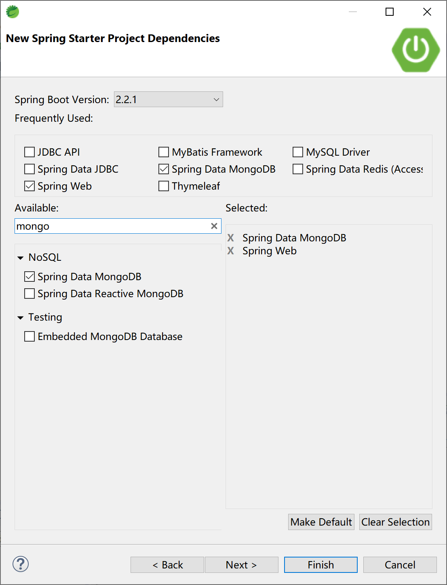
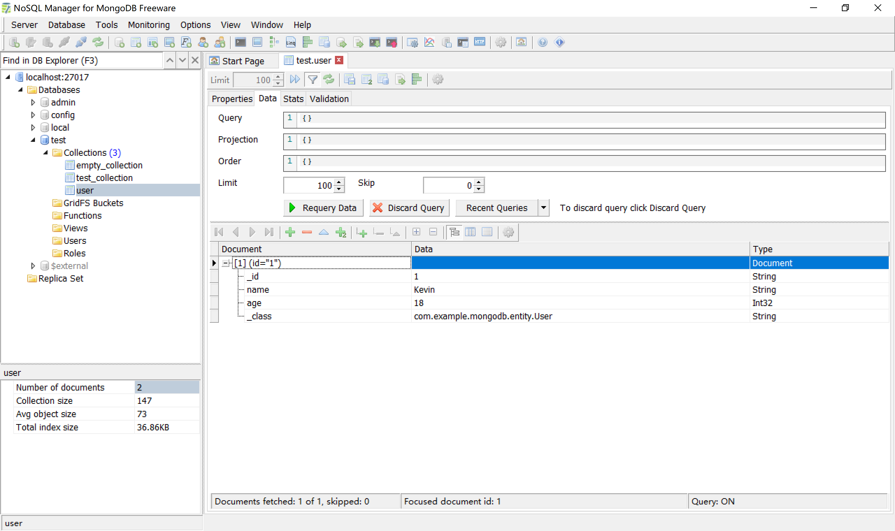
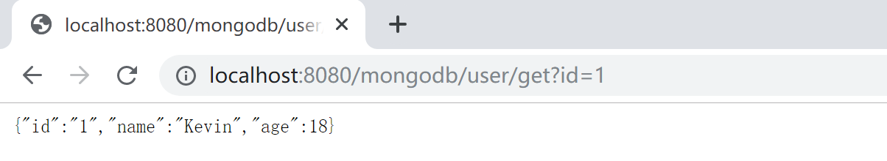
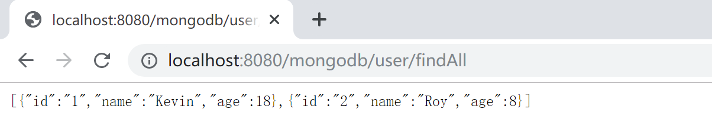
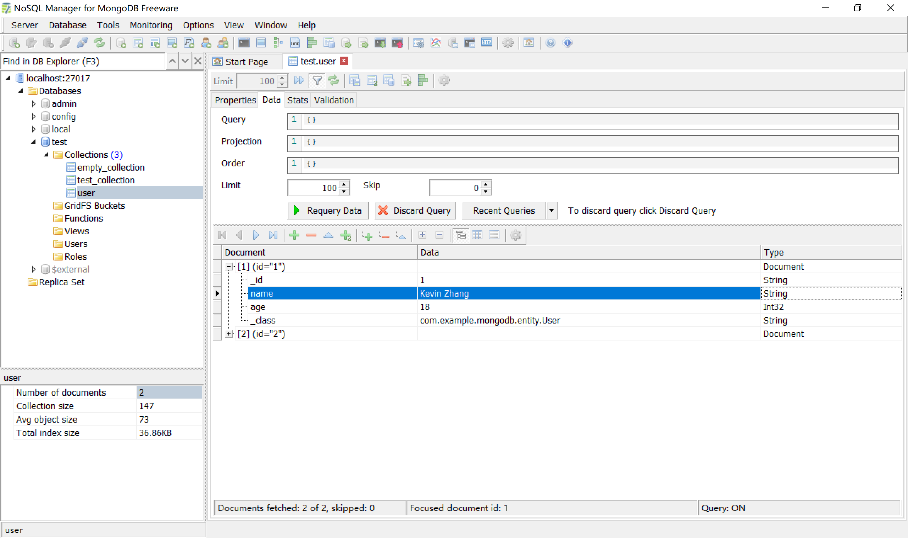
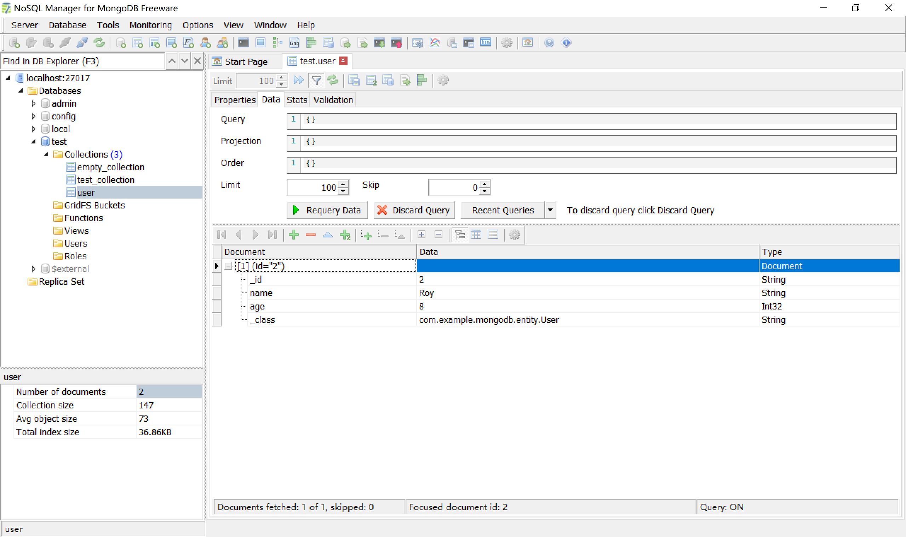
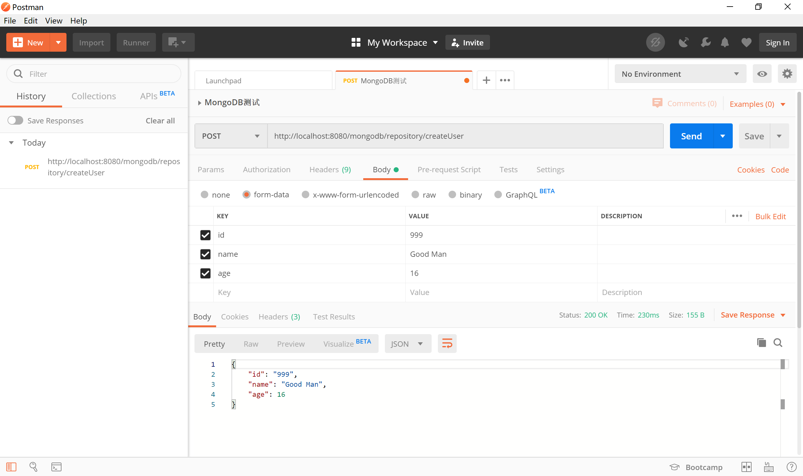
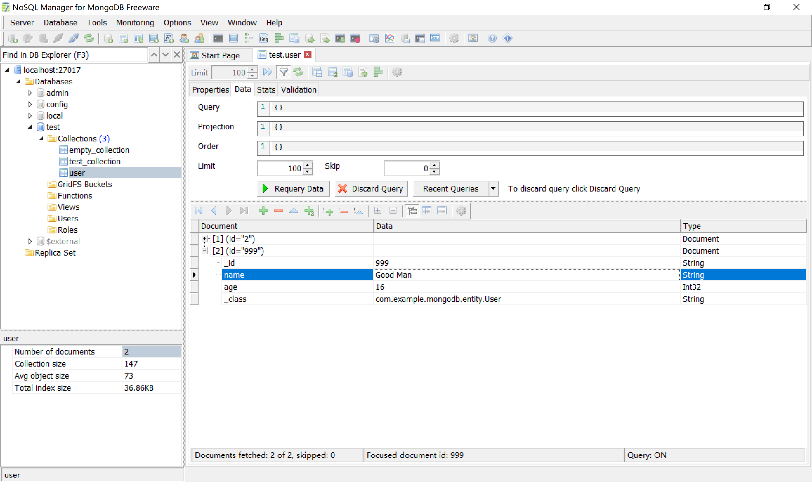
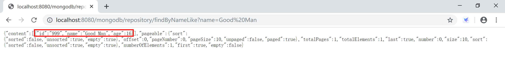
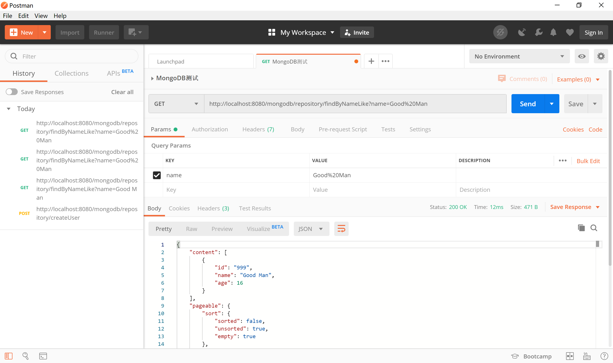

8.2 集成MongoDB
Spring Boot对常见的数据源都通过“Spring Data”项目提供了支持，当然，MongoDB就是通过“Spring Data MongoDB”来支持的。所有的Spring Data子项目的使用方式都基本一致：使用模板（提供xxxTemplate类，如MongoTemplate、RedisTemplate）和类似于JPA的Repository类（如MongoRepository接口的SimpleMongoRepository实现类）。
8.2.1 创建项目
在STS中新建项目，选中Spring Web和Spring Data MongoDB依赖。

创建的项目中，依赖的启动器（starter）如下：
<dependency>
<groupId>org.springframework.boot</groupId>
<artifactId>spring-boot-starter-data-mongodb</artifactId>
</dependency>
<dependency>
<groupId>org.springframework.boot</groupId>
<artifactId>spring-boot-starter-web</artifactId>
</dependency>
在application.yml配置文件中配置MongoDB的连接信息，连接到本地MongoDB服务器。
spring:
application:
name: spirng-boot-mongodb
data:
mongodb:
host: localhost
port: 27017
database: test
后续，我们将使用在上一小节中创建的Test数据库中的User集合（Collection）来完成代码示例。
8.2.2 使用MongoTemplate
在entity包下创建User实体类，对应User集合中的文档。
public class User {
private String id;
private String name;
private int age;
...
我们在示例中提供3个字段：id，name和age。
在service包下创建服务类UserService，其中提供针对User的增删改查功能。
package com.example.mongodb.service;
import java.util.List;
import org.springframework.beans.factory.annotation.Autowired;
import org.springframework.data.mongodb.core.MongoTemplate;
import org.springframework.data.mongodb.core.query.Criteria;
import org.springframework.data.mongodb.core.query.Query;
import org.springframework.data.mongodb.core.query.Update;
import org.springframework.stereotype.Service;
import com.example.mongodb.entity.User;
@Service
public class UserService {
@Autowired
private MongoTemplate mongoTemplate;
public String save(String id, String name, int age) {
User user = new User();
user.setId(id);
user.setName(name);
user.setAge(age);
mongoTemplate.save(user);
return "success";
}
public List<User> findAll() {
return mongoTemplate.findAll(User.class);
}
public User get(String id) {
Query query = new Query(Criteria.where("_id").is(id));
return mongoTemplate.findOne(query, User.class);
}
public String update(String id, String name, int age) {
User user = new User();
user.setId(id);
user.setName(name);
user.setAge(age);
Query query = new Query(Criteria.where("_id").is(id));
Update update = new Update().set("name", name).set("age", age);
mongoTemplate.updateFirst(query, update, User.class);
return "success";
}
public String delete(String id, String name, int age) {
User user = new User();
user.setId(id);
user.setName(name);
user.setAge(age);
mongoTemplate.remove(user);
return "success";
}
}
上述代码中的17-18行注入MongoTemplate类，后续就使用这个模板类完成CRUD的操作。
控制器类，UserController提供了一些url与浏览器交互。
为了方便测试，我们这里不使用post提交表单的方式，而通过get方式附加url参数的形式和后台交互。
package com.example.mongodb.controller;
import java.util.List;
import org.springframework.beans.factory.annotation.Autowired;
import org.springframework.web.bind.annotation.RequestMapping;
import org.springframework.web.bind.annotation.RestController;
import com.example.mongodb.entity.User;
import com.example.mongodb.service.UserService;
@RestController
@RequestMapping("/mongodb/user/")
public class UserController {
@Autowired
UserService userService;
@RequestMapping("/save")
public String save(String id, String name, int age) {
return userService.save(id, name, age);
}
@RequestMapping("/findAll")
public List<User> findAll() {
return userService.findAll();
}
@RequestMapping("/get")
public User get(String id) {
return userService.get(id);
}
@RequestMapping("/update")
public String update(String id, String name, int age) {
return userService.update(id, name, age);
}
@RequestMapping("/delete")
public String delete(String id, String name, int age) {
return userService.delete(id, name, age);
}
}
运行这个Spring Boot应用，通过浏览器测试验证针对MongoDB的增删改查功能。
新增：http://localhost:8080/mongodb/user/save?id=1&name=Kevin&age=18，结果如下：

查找单一记录：http://localhost:8080/mongodb/user/get?id=1，结果如下：

再通过http://localhost:8080/mongodb/user/save?id=2&name=Roy&age=8，增加另外一条记录。
查找所有的记录：http://localhost:8080/mongodb/user/findAll，结果如下：

修改id=1的记录：http://localhost:8080/mongodb/user/update?id=1&name=Kevin%20Zhang&age=18，结果如下（注意查看第1条记录的name字段的值）：

删除记录：http://localhost:8080/mongodb/user/delete?id=1&name=Kevin%20Zhang&age=18，结果如下（id=1的那条记录已经被删除了）：

8.2.3 使用MongoRepository
Spring Data提供了针对MongoDB的，与JPA规范保持一致的操作接口。
Supported keywords inside method names
| Keyword | Sample | JPQL snippet |
|---|---|---|
And |
findByLastnameAndFirstname |
… where x.lastname = ?1 and x.firstname = ?2 |
Or |
findByLastnameOrFirstname |
… where x.lastname = ?1 or x.firstname = ?2 |
Is, Equals |
findByFirstname,findByFirstnameIs,findByFirstnameEquals |
… where x.firstname = ?1 |
Between |
findByStartDateBetween |
… where x.startDate between ?1 and ?2 |
LessThan |
findByAgeLessThan |
… where x.age < ?1 |
LessThanEqual |
findByAgeLessThanEqual |
… where x.age <= ?1 |
GreaterThan |
findByAgeGreaterThan |
… where x.age > ?1 |
GreaterThanEqual |
findByAgeGreaterThanEqual |
… where x.age >= ?1 |
After |
findByStartDateAfter |
… where x.startDate > ?1 |
Before |
findByStartDateBefore |
… where x.startDate < ?1 |
IsNull, Null |
findByAge(Is)Null |
… where x.age is null |
IsNotNull, NotNull |
findByAge(Is)NotNull |
… where x.age not null |
Like |
findByFirstnameLike |
… where x.firstname like ?1 |
NotLike |
findByFirstnameNotLike |
… where x.firstname not like ?1 |
StartingWith |
findByFirstnameStartingWith |
… where x.firstname like ?1 (parameter bound with appended %) |
EndingWith |
findByFirstnameEndingWith |
… where x.firstname like ?1 (parameter bound with prepended %) |
Containing |
findByFirstnameContaining |
… where x.firstname like ?1 (parameter bound wrapped in %) |
OrderBy |
findByAgeOrderByLastnameDesc |
… where x.age = ?1 order by x.lastname desc |
Not |
findByLastnameNot |
… where x.lastname <> ?1 |
In |
findByAgeIn(Collection ages) |
… where x.age in ?1 |
NotIn |
findByAgeNotIn(Collection ages) |
… where x.age not in ?1 |
True |
findByActiveTrue() |
… where x.active = true |
False |
findByActiveFalse() |
… where x.active = false |
IgnoreCase |
findByFirstnameIgnoreCase |
… where UPPER(x.firstame) = UPPER(?1) |
在dao包下创建UserDAO接口，并给出符合上述命令规范的方法，如findByNameLike方法。
package com.example.mongodb.dao;
import org.springframework.data.domain.Page;
import org.springframework.data.domain.Pageable;
import org.springframework.data.mongodb.repository.MongoRepository;
import com.example.mongodb.entity.User;
public interface UserDAO extends MongoRepository<User, String> {
public Page<User> findByNameLike(String name, Pageable pageable);
}
创建控制器RepositoryController，注入UserDAO，添加控制器方法。
package com.example.mongodb.controller;
import org.springframework.beans.factory.annotation.Autowired;
import org.springframework.data.domain.Page;
import org.springframework.data.domain.PageRequest;
import org.springframework.web.bind.annotation.RequestMapping;
import org.springframework.web.bind.annotation.RestController;
import com.example.mongodb.dao.UserDAO;
import com.example.mongodb.entity.User;
@RestController
@RequestMapping("/mongodb/repository/")
public class RepositoryController {
@Autowired
UserDAO userDAO;
@RequestMapping("/createUser")
public User createUser(User user) {
return userDAO.save(user);
}
@RequestMapping("/findByNameLike")
public Page<User> findByNameLike(String name) {
PageRequest pageable = PageRequest.of(0, 10);
return userDAO.findByNameLike(name, pageable);
}
}
其中的createUser方法使用了org.springframework.data.repository.CrudRepository接口中的save方法。
其中findByNameLike方法使用的是我们遵循Spring Data JPA方法名规范在UserDAO类中提供的findByNameLike(name, pageable)方法。
运行程序，使用Postman测试，createUser服务接口：

检查MongoDB中的数据，确认其已经正确创建id为999的记录。

通过浏览器访问http://localhost:8080/mongodb/repository/findByNameLike?name=Good Man，检查是否正确返回查询到的数据。

通过Postman发起get请求，请求地址为http://localhost:8080/mongodb/repository/findByNameLike?name=Good Man，检查其返回的数据为id=999的记录。

本小节示例项目代码：
https://github.com/gyzhang/SpringBootCourseCode/tree/master/spring-boot-mongodb